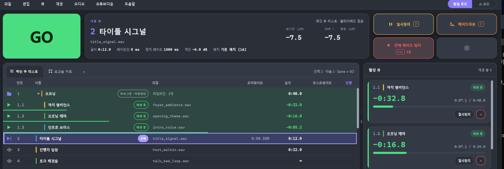

앤큐 · Windows용 쇼 큐 플레이어
설치 파일에 아직 코드 서명이 없어서 Windows가 "알 수 없는 게시자" 경고를 띄울 수 있습니다. 경고 창에서 추가 정보 → 실행을 누르면 설치가 진행됩니다.

주요기능
- ASIO 지원
- 오디오 멀티채널 지원 (ASIO 에서만 활성화)
- 모든 큐에 별도로 VST3 인서트 가능
- 마스터 채널에 별도 VST3 인서트 가능
- 실시간으로 파형에서 페이드 조절가능
- 폴더 큐 리스트 지원
비용 : 완전 무료
요구 사항
- 운영체제
- Windows 10 / 11 (64비트)
- 오디오 장치
- ASIO 인터페이스 권장. 다채널 출력은 ASIO에서만 됩니다. Windows Audio(공유/독점/저지연)와 DirectSound는 출력 1-2.
- 플러그인
- VST3
- 설치
- 사용자 계정에 설치(관리자 권한 불필요). 업데이트는 프로그램 안에서 자동으로 확인합니다.
커뮤니티 · 베타 참여
지금은 베타 기간입니다. 문제나 의견, 질문은 카카오톡 오픈채팅으로 보내 주세요. 프로그램 안 도움말 → 커뮤니티 메뉴에서도 열립니다.
카카오톡 오픈채팅 바로가기앤큐 커뮤니티 · 문의 · 피드백사용 설명서는 프로그램 안 도움말 → 사용 설명서(Ctrl+F1)에 있습니다.